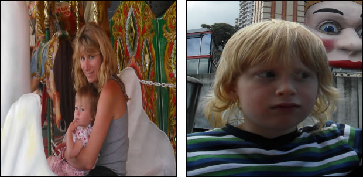

CSS3 の object-fit と object-position プロパティ
はじめに
CSS でよくある問題に、やなどの置換要素のアスペクト比を制御するというものがあります。たとえば、アスペクト比の違うものが混ざってもそれが変形されないように、ページに画像を同じ大きさで並べたいという場合を考えてみましょう。画像を切り抜いたり無理やり変形させるよりも、アスペクト比を保ちながらリサイズし、レターボックス表示にするほうがずっとエレガントです。あるいは逆に、レターボックスを持つ HTML5 の <video> などのコンテンツを特定の幅と高さにあわせることや、全てのビデオをあるアスペクト比に整形したいかもしれません。異なるアスペクト比を持つコンテンツを自動的に意図した通りに見せる方法はないものでしょうか。
現在、こういった事をするのはとても難しく、JavaScript から画像サイズをオンザフライで操作するか、とても多くの CSS を書く必要があります。しかし、CSS3 の Image Values and Replaced Content モジュールで定義される object-fit プロパティを使うと、これらの問題を解決できるのです。このモジュールは他にも、要素中の内容について水平方向・垂直方向の位置を指定する object-position プロパティを定義しています。
object-fit と object-position は Opera 11 でサポートされました (現在は -o- ベンダー接頭辞が必要です)。これらのプロパティは置換要素 <video>, <object>, <img>, <input type=image>, <svg>, <svg:image>, <svg:video> に指定できます。
object-fit は SVG コンテンツにも適用されますが、SVG では同様の働きをする preserveAspectRatio="" 属性が定義されています。
object-fit と object-position のはたらき
object-fit プロパティはどの置換要素にも適用できます。
img {
height: 100px;
width: 100px;
object-fit: contain;
}この記事で使うサンプルや例では、置換要素に CSS で width と height を与えています。object-fit は HTML で直接指定された幅や高さに対しても機能しますが、この CSS プロパティに対応しないブラウザでは置換要素がつぶれて表示されてしまうので HTML で指定していません。こうすることで CSS に対応しないブラウザでは、置換要素が内在する大きさで表示されます。CSS で指定することと HTML で指定することのどちらが良いかは、状況やどのような graceful degradation を望んでいるかで変わります。
object-fit に指定できる値は次のとおりです。
contain: 置換要素へ明示的にwidthとheightを与えた場合、object-fit: contain;はそのコンテンツ (画像など) がもともと持つアスペクト比を保ちつつ、widthとheightで指定された領域に収まるようにリサイズされます。fill: 指定された領域に沿うようにコンテンツの大きさを拡張します。結果的に、コンテンツがもともと持つアスペクト比が保たれないことがあります。cover: コンテンツがもともと持つアスペクト比を保ちながら、指定された領域を完全に覆うようリサイズします。コンテンツのもつ幅と高さのうち短いものが指定領域にフィットし、長いものは指定領域からはみ出します。none: コンテンツは要素に指定されたwidthとheightを無視し、置換要素がもともと持つ幅と高さを利用します。
none は Opera でサポートされていますが、CSS WG でその必要性などが議論されています。冒頭で紹介した Editor's Draft では存在していますが、公式な草案の最新版からは現在削除されているなど、今後が不透明な状態にあります。
object-position は background-position が背景画像に及ぼすものと同じ効果を与えます。
img {
height: 100px;
width: 100px;
object-fit: contain;
object-position: top 75%;
}Opera では object-fit に auto という値を指定できます。これはプロパティが指定されていない状態と同じ効果を与えるもので、後方互換性を保つことと、先に指定した設定を上書きしたい時のためだけに用意されています。
アスペクト比を保った画像のリサイズ
レターボックスとして知られているでしょうか。画像アスペクト比を保ちつつ、用意された領域に収めたい場合があると思います。たとえば、Eコマースサイトの CMS が画像ギャラリーに製品画像をアップロードする機能を備えているとします。多くのコンテンツ製作者が画像をアップロードし、その大半が同じ大きさですが、その寸法は異なっています。画像は各製品ページに同じ大きさで表示されなければならず、はみ出ることができず、またはみ出した部分は切り取られてしまいます。このような場合、すべての画像が同じ大きさとなるようアスペクト比を変更すればいちおう解決できますが、見栄えはひどいものです。

図1: アスペクト比を変更した画像のなんとひどいことか。
これに対し、レターボックスで表現する方法もあります。

図2: レターボックスはとてもまともに見える。
レターボックスはとても見栄え良いものですが、現在のブラウザのサポート状況からクライアントサイドで実現するには複雑すぎるのです。サーバーサイドで画像をあらかじめ変換するという処理も行えますが、それもまた複雑で、またオーバーヘッドもあります。
このような問題にも、object-fit は簡単に対処できます。
img {
width: 300px;
height: 300px;
...
-o-object-fit: contain;
}サンプルファイルでは -o-, -moz-, -ms-, -webkit- というベンダー接頭辞つきプロパティの他に、接頭辞なしの正式な object-fit プロパティを併記しています。こうすることで Opera やそれ以外のブラウザに対して、それらがプロパティを接頭辞つきでサポートし始めた際、また接頭辞なしの正式なプロパティに対応した際に前方互換性を保証できます。ただ上記の例では、見やすさのため -o- 接頭辞つきプロパティだけを書いています。
すべての画像は同じ幅と高さが指定されますが、-o-object-fit: contain; が指定されたことにより、各画像はそのアスペクト比を保ったまま、指定領域内に収まります。実際に -o-object-fit: contain; のサンプル を見てみましょう。
状況によっては、アスペクト比を保つけれど、領域を画像で完全に覆ってはみ出たものは切り取るほうがよいかもしれません。このような場合は、-o-object-fit: contain; ではなく -o-object-fit: cover; を指定し、さらに overflow:hidden; を書き加えます。
img {
...
-o-object-fit: cover;
overflow: hidden;
}実際に -o-object-fit: cover; のサンプル を見てみましょう。
ビデオのアスペクト比を変更する
次に紹介する例は、先ほどと逆で、アスペクト比が壊れたせいで横に細長くなってしまったビデオを適切なアスペクト比に変形し、さらに object-fit: fill; でレターボックスを解除します。CMS でアップロードされたビデオのアスペクト比が壊れていたという状況がもしある場合、CSS だけで簡単に調整できます。
アスペクト比が壊れるといっても、ここで紹介するサンプルほどひどくはありません。せいぜい 16:9 が 4.3 になってしまったという程度です。それでも厄介なものではありますが。
違いを分かりやすくするため object-fit: fill; とビデオのサンプル は同じ壊れたアスペクト比を持つビデオを <video> 要素から表示し、2番目のものに object-fit: fill; を与えビデオの表示を調整しています。
<video controls="controls" src="windowsill.webm" width="426" height="240" class="no-object-fit">
...
</video>
<video controls="controls" src="windowsill.webm" width="426" height="240" class="object-fit">
...
</video>どちらの <video> 要素にも width, height 属性が指定されていますが、最初の例はレターボックス表示になっています。これは <video> 要素は参照したファイルがもともと持つアスペクト比を保つようになっているからです。結果としてひどい表示になっているので、2番目の <video> 要素には object-fit: fill; を与え、要素に与えた width, height 属性の値でビデオを表示するようにしています。
.object-fit {
...
-o-object-fit: fill;
}object-fit: fill; を与えると、ビデオの持つアスペクト比を上書きし、<video> 要素に与えた大きさにコンテンツを変形し収めるため、ちゃんと表示されるのです。
トランジションと組み合わせ面白い効果に
object-fit, object-position と CSS Transitions を組み合わせることで、画像ギャラリーやビデオギャラリーで面白い効果を演出できます。では、記事で最初に出した例をすこし変更してみましょう。
img {
width: 200px;
height: 200px;
...
overflow: hidden;
-o-object-fit: none;
-o-object-position: 25% 50%;
-o-transition: 1s width, 1s height;
}
img:hover, img:focus {
height: 350px;
width: 350px;
}これはあくまで、ポイントを抑えるためにシンプルに作ったサンプルです。基本的なキーボードアクセスは tabindex 属性を与えフォーカス可能にすることで担保されています。しかし、ちゃんとした画像ギャラリーはサムネイルがクリックでき、そこから大きな画像を見られるようになっているでしょう。
object-fit: none; と overflow によるギャラリーのサンプル でカーソルをサムネイルに重ねてみましょう。さて、サムネイルは画像領域の大きさに無理やり縮小されているのではなく、一部分が表示されていることがわかります。そして、カーソルを重ねると隠れていた領域が広がり、広い範囲を見ることができます。これはどうやっているのでしょうか。
<img> 要素に -o-object-fit: none; を与えることで、要素に指定された width, height 属性を無視し、領域外にはみ出させます。画像がもともと持っている大きさが <img> 要素に指定されたサイズよりもずっと大きいので、overflow: hidden; を使いはみ出た部分を切り取っています。トランジションはホバー時/フォーカス時により大きな領域を表示する際に使っています。
これだけではありません。サンプルでは -o-object-position: 25% 50%; を与え、<img> が表示される箇所を少し右にずらしています。こうすることで、ホバー時/フォーカス時の演出をより効果的に見せています。
-o-object-position は他にも、画像やビデオのキャプションを表示する隙間をつくるために使うことなどができます。
おわりに
この記事では object-fit と object-position をどう使うかを例と共に説明しました。他の例も object-fit のテストスイート から見ることができます。私たちはどのようなものができるか興味津々です。もし素敵なサイトを作った、もしくは Opera の実装についてなにかある場合はぜひ教えてください！
This article is licensed under a Creative Commons Attribution 3.0 Unported license.
Comments
The forum archive of this article is still available on My Opera.
No new comments accepted.